Hi, ich bin Marlon. Ich verbinde Corporate Comms, Online Marketing und KI — mit Konzernblick, Startup-Mentalität und freiberuflicher Hands-on-Erfahrung. Ich entwickle digitale Kommunikation, die Haltung zeigt, Performance mitdenkt und KI dort einsetzt, wo sie echten Mehrwert schafft.
weiter lesen
00Ein bisschen über mich
Zwischen Konzernkommunikation, Startup-Praxis und KI
In den letzten Jahren habe ich Kommunikation aus sehr unterschiedlichen Perspektiven kennengelernt — im EnBW-Newsroom, im GreenTech-Startup, freiberuflich für KMU und ehrenamtlich für eine NGO in Ghana. Mal strategisch, mal operativ, meistens beides gleichzeitig.
Genau das prägt meinen Ansatz. Gute Kommunikation endet für mich nicht beim Content. Sie braucht ein Verständnis für Marke, Zielgruppen, Plattformen, Daten und Vertrauen. Und immer öfter auch ein Gespür dafür, wie KI sinnvoll eingesetzt werden kann, ohne dass Kommunikation künstlich wirkt.
ein paar Eindrücke.
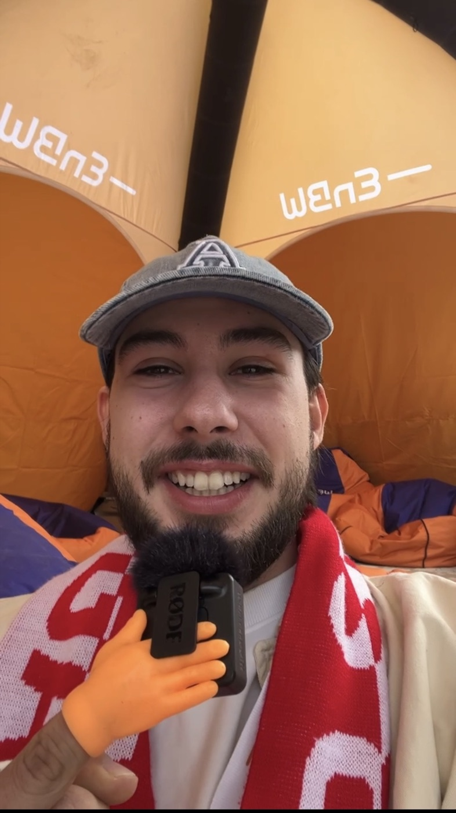
Pokalfinal-ReportageEnBWIm Studioauch vor der Kamera
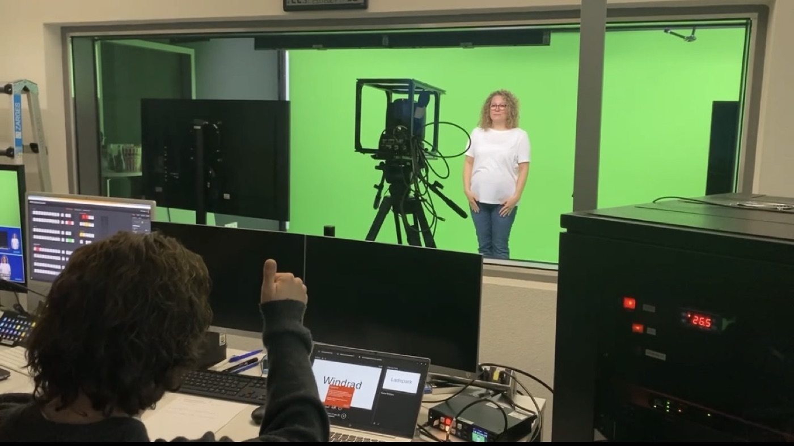
RegieKI-Avatar Dreh
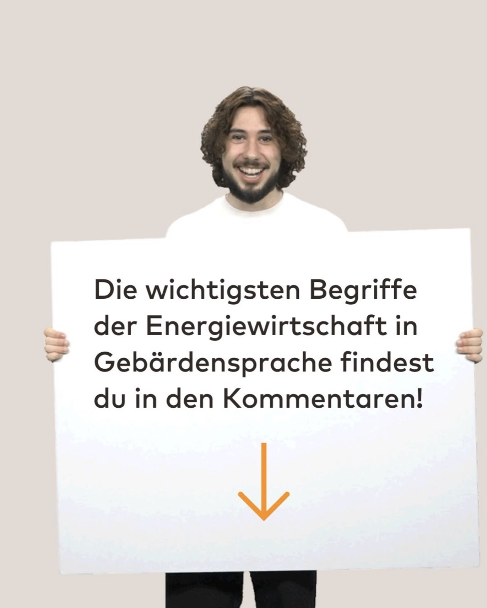
Deepdive GebärdenspracheEnBW
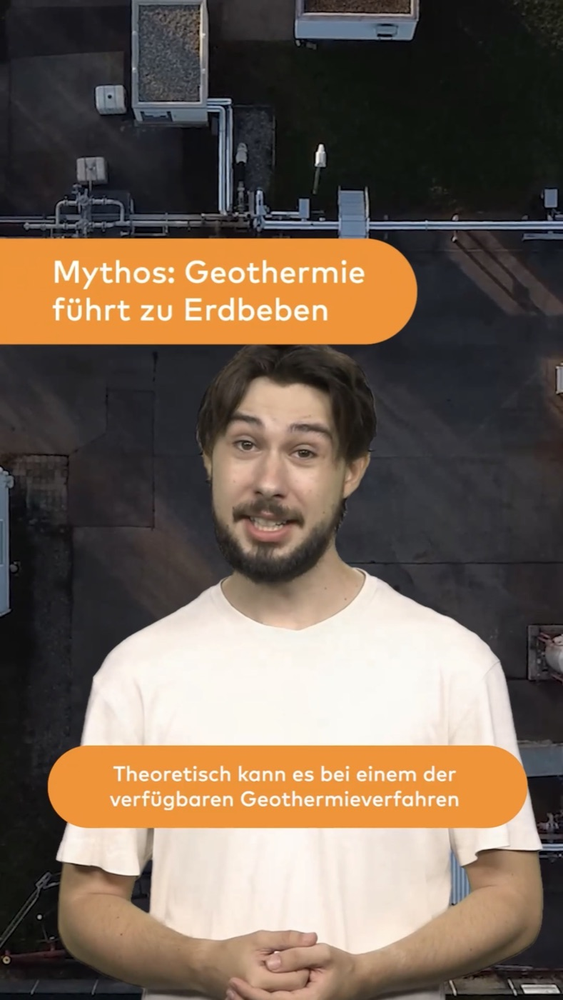
Mythen-CheckEnBW
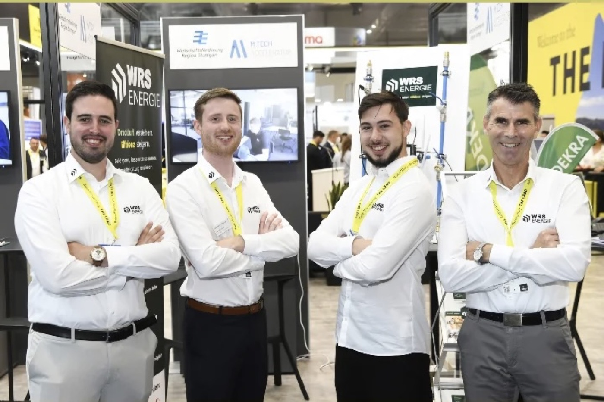
Hannover Messe 2022WRS Energie + Druckluft GmbH
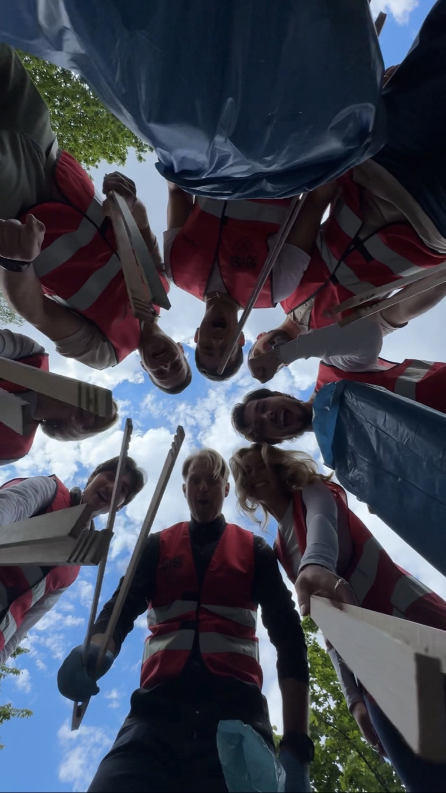
Clean Upmit Timo Hildebrand
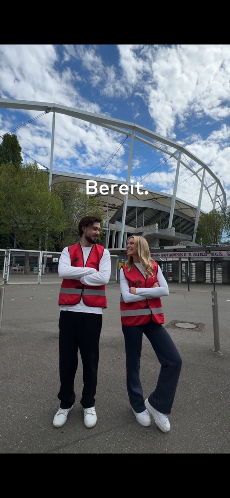
Content CreationEnBW x VfB Stuttgart
Tipp: über ein Foto fahren.
AArbeiten
Was ich in letzter Zeit gemacht habe.
01
EnBW AG2025Masterarbeit · Konzept · Forschung
Mein digitaler Zwilling für die Unternehmenskommunikation.
Für meine Masterarbeit in Kooperation mit der EnBW habe ich einen KI-Avatar entwickelt, der auf mir selbst basiert. Der Ausgangspunkt war bewusst nah an der Praxis: Ich war bereits Teil verschiedener Social-Media-Formate des Unternehmens — und damit ein reales Gesicht, das man auf den Kanälen kannte.
Genau daraus entstand die spannendste Frage des Projekts: Was passiert mit Vertrauen, Nähe und Glaubwürdigkeit, wenn aus einem echten Corporate Creator plötzlich auch eine KI-generierte Version wird?
Untersucht habe ich dieses Spannungsfeld zwischen Effizienz, Sichtbarkeit und Vertrauen in der Unternehmenskommunikation.
KI · AI
Research
Corporate Comms
Social Media
Welcher davon ist der KI-Avatar? Maus drüber zum Auflösen.
Zum Tag der Biodiversität haben wir die EnBW-Kanäle an einige der Tiere übergeben, die rund um die Anlagen leben. Bild, Stimme und Animation komplett KI-generiert — Geschichten von echten Lebensräumen rund um die Energieinfrastruktur.
Aktivierungen rund um die Partnerschaft mit dem VfB Stuttgart.
Für die EnBW habe ich Social-Media-Aktivierungen begleitet, produziert und vor der Kamera umgesetzt — vom Public Viewing auf dem Stuttgarter Schlossplatz während des Pokalfinals über den gemeinsamen Clean Up Day mit dem VfB bis zur KI-Aktion „EMBW TrAIner“ zur EM 2024.
Sponsoring
Content Production
Live Coverage
Paid Media
Nachhaltigkeit
i
Pokalfinale 2025Stuttgart Schlossplatz · Public Viewingii
Clean Up DayEnBW × VfB Stuttgartiii
EMBW TrAInerKI-Aktion zum Spiel
Paid Media
Paid Social für Sponsoring- und Eventaktivierungen der EnBW.
Für die EnBW habe ich ausgewählte Sponsoring- und Eventaktivierungen in Paid-Social-Kampagnen überführt — von Anzeigenkonzept, Copy und Creative-Adaption bis zu Schaltung, Monitoring und Auswertung. Dazu gehörten unter anderem Kampagnen zur Eventreihe „90 Minuten Nachhaltigkeit, 90 Minuten Fußball“ sowie das VfB-Quiz rund um das Pokalfinale.
Der Fokus lag darauf, aus einzelnen Kommunikationsanlässen strukturierte Kampagnen für Facebook und Instagram zu entwickeln: mit mehreren Creative-Varianten, klarer Zielgruppenansprache und laufender performancebasierter Optimierung.
Video-Ad · Eventreihe (mehrfach geschaltet)
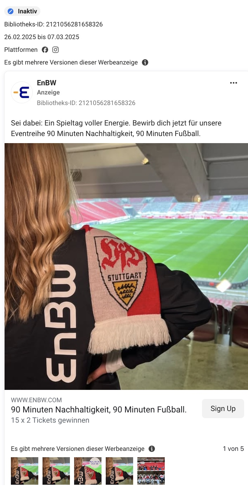
Gewinnspiel-Ad · Stadionschal
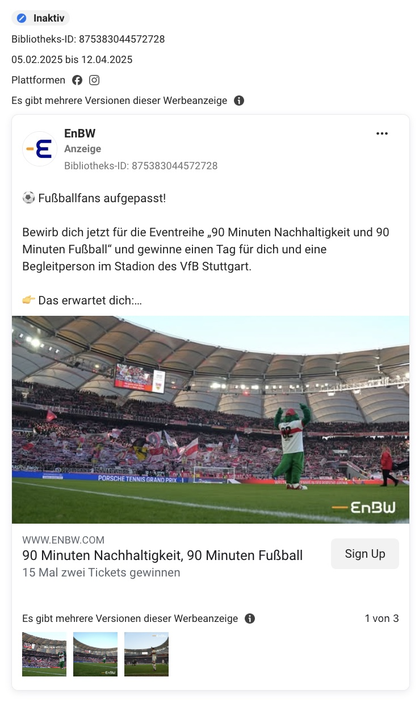
Gewinnspiel-Ad · Maskottchen
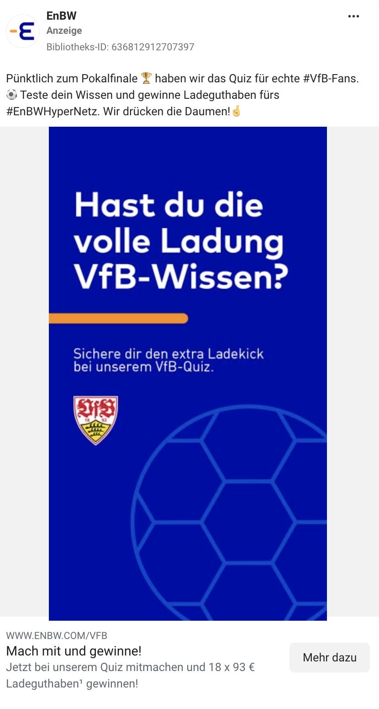
Quiz-Ad zum Pokalfinale
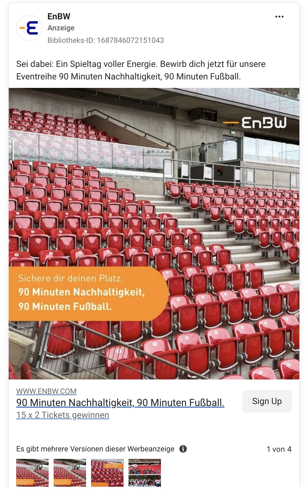
Gewinnspiel-Ad · Stadionplätze
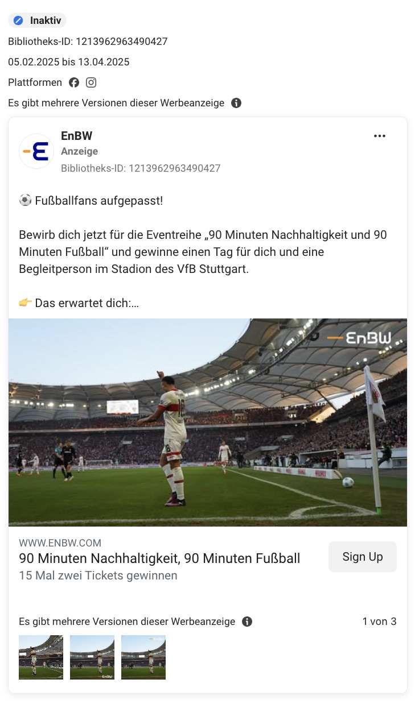
Gewinnspiel-Ad · Spieltag
04
EnBW AG2025Lead · Agenturkoordination · Rollout
Corporate Motion für Community Management und Employer Branding.
Als Projektleiter habe ich für EnBW die Produktion von über 60 animierten Corporate-GIFs gesteuert — von Konzeption, Agenturauswahl und Briefing über Qualitätssicherung bis zum eigenständigen Rollout im Konzern. Entstanden ist ein vielseitiges Motion-Asset-Set für markenkonforme Kommunikation im Community Management, Employer Branding sowie in Präsentationen, Newslettern, Intranet und Microsoft Teams. Gemeinsam mit einer gehörlosen Kollegin entstanden zudem DGS-GIFs in Gebärdensprache — für eine inklusivere Kommunikation bei der EnBW.
Motion
Brand
Agency Lead
Rollout
Rollout-Intro-VideoInterner Rollout · Intranet, Austauschgruppen & Foren
KI-Beratung und digitale Konzepte für den Mittelstand.
Mit DeCign berate ich kleine und mittelständische Unternehmen dazu, was Social Media, generative KI und Automatisierung für sie konkret bedeuten — und was eher nicht. Strategie, Konzepte, Workshops, Hands-on. Jeder Auftrag eine andere Branche, jeder Auftrag ein anderes Verhältnis zu Technologie.
Consulting
KI · AI
Strategie
Automatisierung · n8n
Webdesign
KI-Automatisierung
Content-Automatisierung für ein GreenTech-Startup.
Ein GreenTech-Startup hatte im Tagesgeschäft schlicht keine Zeit für regelmäßige Contentplanung — und sprang deshalb ständig reaktiv auf aktuelle Themen auf, was andere Aufgaben ausbremste. Gemeinsam haben wir den Prozess mit zwei n8n-Workflows automatisiert, die Hand in Hand arbeiten.
Der erste Workflow erstellt aus einem kurzen Briefing per Gemini und Google-Search-Grounding einen kompletten Monats-Redaktionsplan — inklusive aktueller Anlässe und saisonaler Trends — und schreibt ihn als fertigen Contentkalender in Google Sheets. Der zweite Workflow setzt genau dort an: Aus bestehendem Long-Form-Content wie Blogbeiträgen entstehen automatisch mehrere fertig getextete Short-Form-Beiträge für LinkedIn, Instagram und Newsletter — markenkonform und sofort einsatzbereit. Auf Wunsch liefert eine Schnittstelle zur eigenen Cloud-Dateiablage passende Bilder gleich mit.
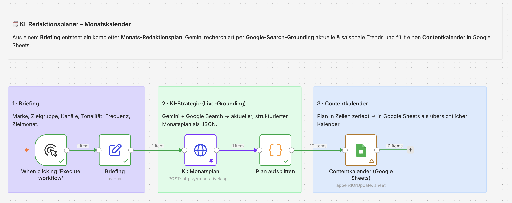
Workflow 1 · KI-Redaktionsplaner — Briefing → Monatsplan via Gemini + Google-Search-Grounding → Google Sheets.
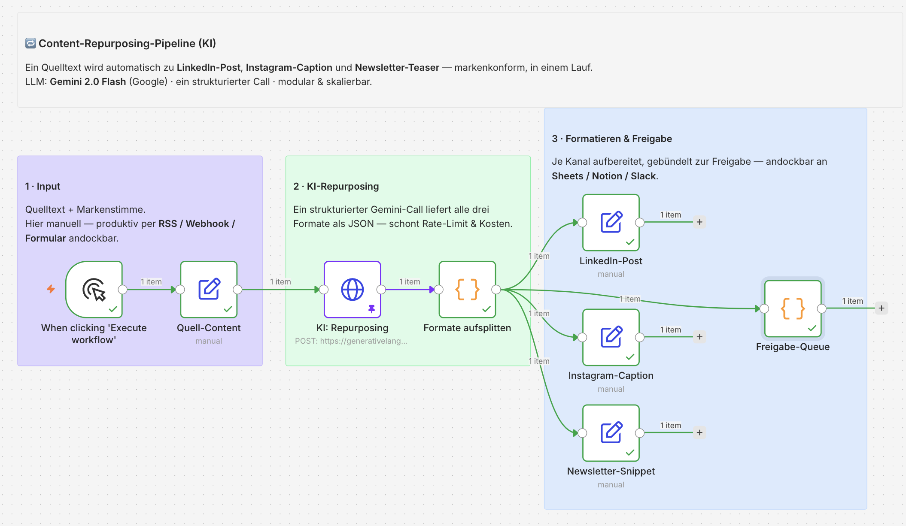
Workflow 2 · Content-Repurposing — aus Blogbeiträgen & Long-Form entstehen fertige Posts für LinkedIn, Instagram & Newsletter (optional inkl. Bildern aus der Cloud).
Anonymisierte Demo-Nachbauten — zur Veranschaulichung der Workflows.
06
WRS Energie + Druckluft2022Marketing-Praktikant
Marketing-Aufbau in einem GreenTech-Startup.
Sechs Monate als Praktikant bei einem SaaS-Anbieter für intelligentes Druckluft-Monitoring. Von B2B-Personas über Messeauftritt bis Website. Mein Verantwortungsbereich: Brand, Print, Social und Web — alles auf der grünen Wiese.
6Monate Praktikum
+138 %Followerwachstum Instagram
+306,3 %Followerwachstum LinkedIn
+236,3 %Website-Traffic
B2B
SaaS
GreenTech
Brand · Print · Web
Print
Flyer, Broschüre und Messebanner.
Komplette Print-Range — vom dunklen Verkaufs-Flyer über die dreifach ausklappbare Vertriebsbroschüre bis zum Messebanner für die Auftritte 2022.
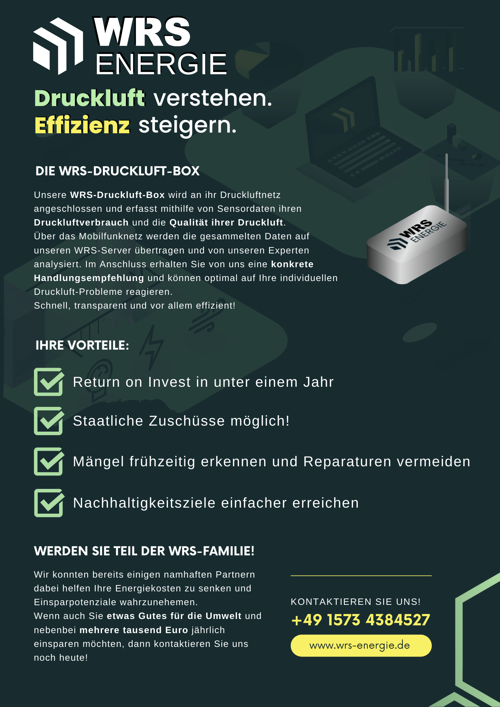
Verkaufs-Flyer
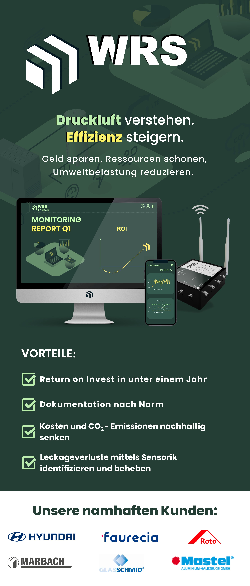
Messebanner
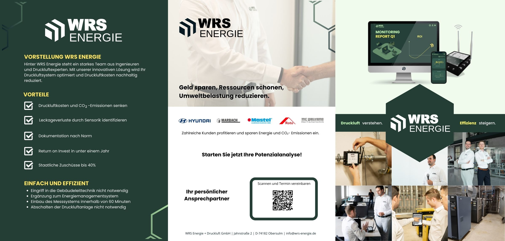
Broschüre, Außenseiten
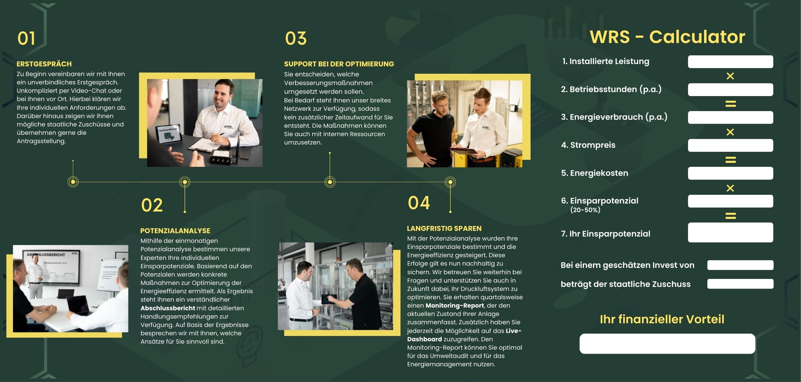
Broschüre, Innenseite (dreifach ausklappbar)
Social Media
Aufbau der Instagram-Präsenz.
Redaktionsplanung, Content-Produktion und Community-Management. Aus 19 Posts und 100 Followern wurden in sechs Monaten 35 Posts und 238 Follower — bei deutlich klarerer Markenidentität.
AGFA — African Giants Football Academy2021 / 2022Digital Marketing Lead · Ehrenamtlich
Eine Markenidentität für eine Initiative aus Ghana.
Acht Monate ehrenamtlich für eine Fußball- und Bildungsinitiative aus Kasoa, Ghana. Logo, Trikotdesign, Website, Social Media — alles auf Englisch, gemeinsam mit dem Gründungsteam vor Ort. Mein Verantwortungsbereich: die komplette visuelle Marke und der digitale Auftritt.
NGO
Brand Identity
Webdesign
Pro-Bono
Brand
Logo und Trikot-Design.
Markenidentität in den Farben Ghanas — Rot, Gelb, Grün. Im Zentrum des Logos steht ein Adinkra, ein westafrikanisches Symbol mit starker Bedeutung: „Akoma Ntoso“ — „verbundene Herzen“ — ein Kernelement der Philosophie der NGO. Trikots für Feldspieler und Torwart als physische Manifestation der Marke.
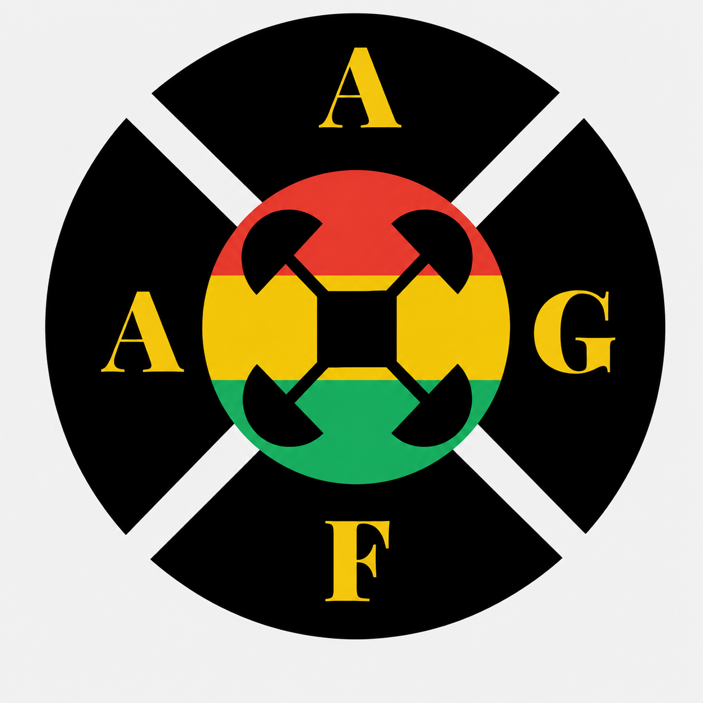
Vereins-Logo
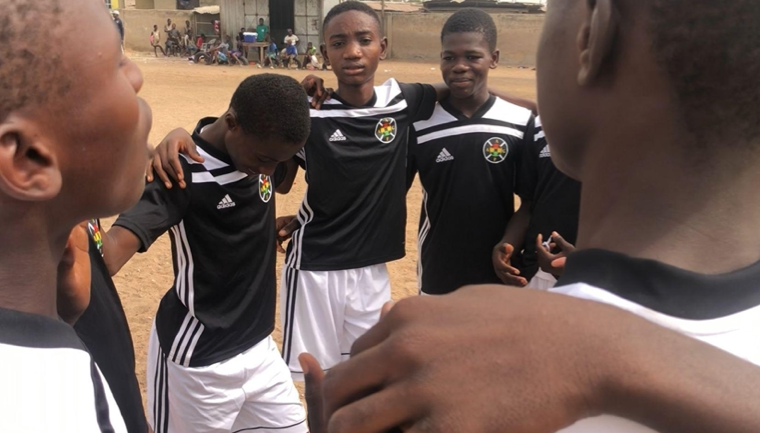
Spieler-Trikot
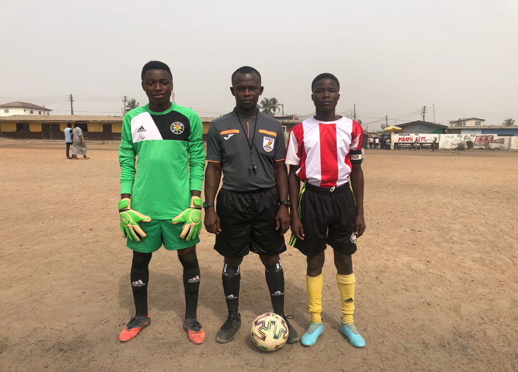
Torwart-Trikot
Website
Zentrale digitale Anlaufstelle für Spenden und Sponsoring.
Konzeption, Design und Betreuung der Website als zentraler Punkt für Spender:innen, Sponsoring-Partner und Interessierte. Englischsprachig, aufgebaut mit dem Gründungsteam in Ghana.
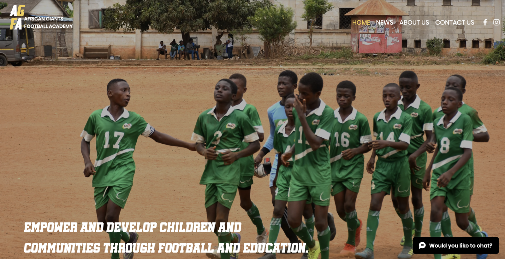
Startseite
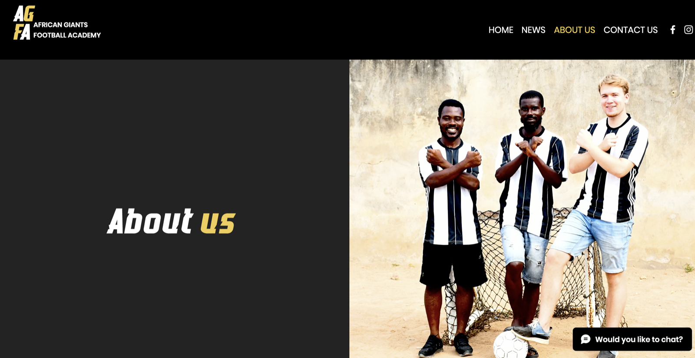
About Us · Hero
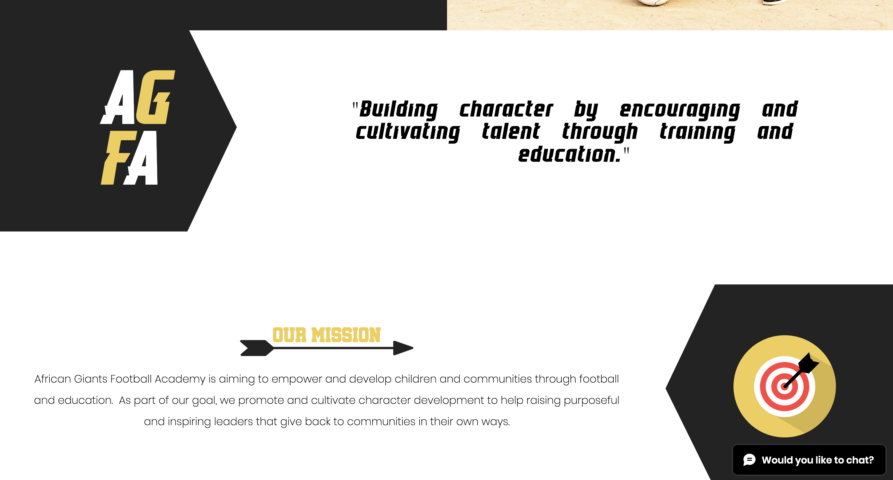
About Us · Mission
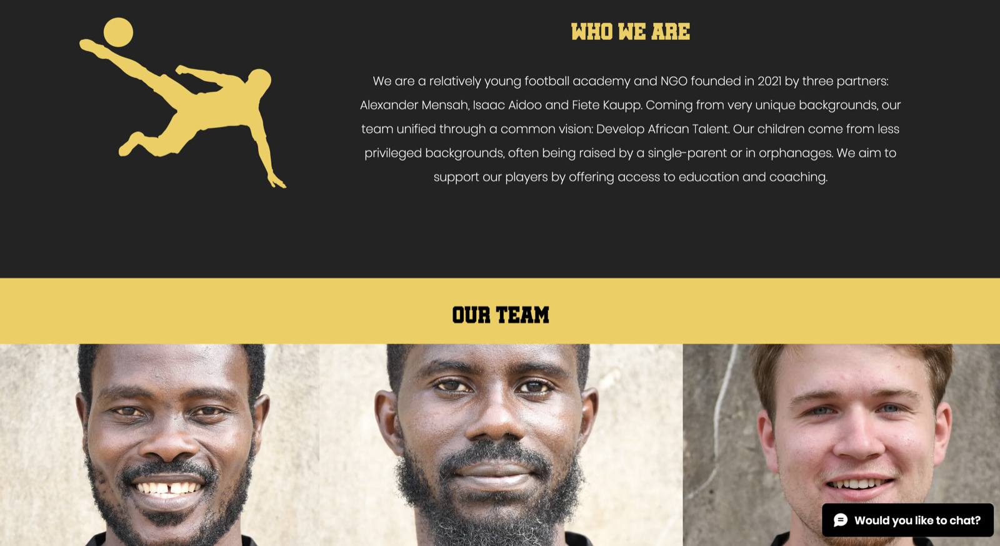
About Us · Team
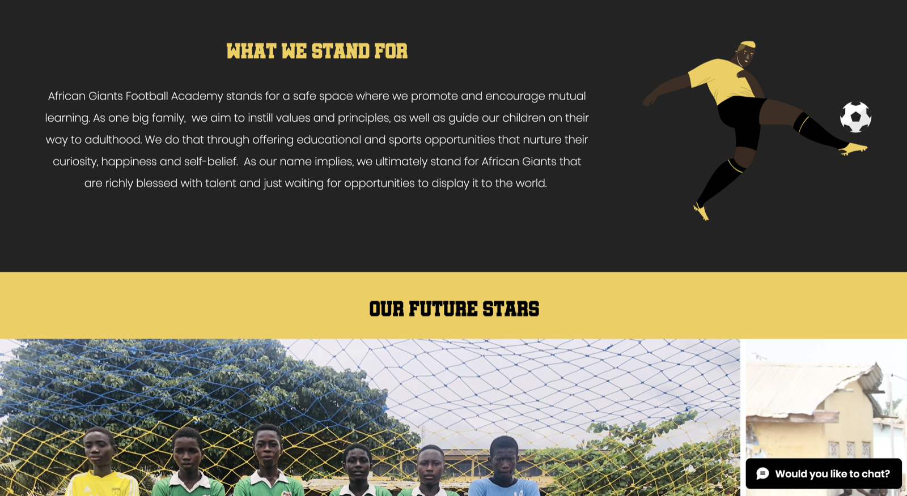
About Us · Future Stars
BLebenslauf
In Jahren erzählt.
2023 — heute
Social Media & KI Berater
DeCign Marketing & Content · Stuttgart
Social Media, generative KI, Automatisierung für KMU.
Wenn Sie nach diesem Portfolio eine Schnittstelle sehen, an der mein Profil für Ihr Team relevant werden könnte, freue ich mich über Ihre Nachricht. Am liebsten per Mail. Alles Weitere besprechen wir persönlich.